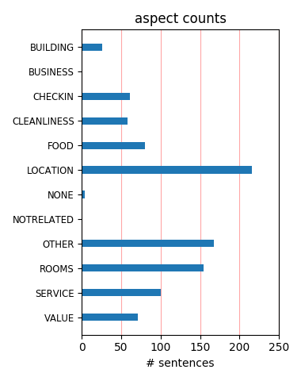
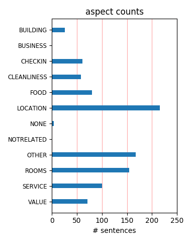

This hotel is conveniently located near Metro and Notre Dame. It is handy but out of the tourist hub therefore quiet. The staff are extremely friendly and helpful. The rooms are a reasonable size and very clean. We have stayed here for nearly 2 weeks and have loved it here.
We stayed at the Hotel Monge the first couple of night's of our honeymoon. It is a great place to stay for those on a budget. Good location. Excellent front desk staff - very approachable, feel free to ask questions. Very clean and comfortable. Truly enjoyed it and would recommend it.
This hotel was exactly what we needed. It was very close to the Metro and restaurants/bars. They also had our room ready when we arrived at 9:00am from our overseas flight which was wonderful. Definitely nothing fancy and the elevator is about 3 sq feet. We really enjoyed our stay though!
Very nicely decorated hotel, excellent service and warm atmosphere in this perfectly located hotel. Lots of interesting places within walking distance. It was very nice to get back to the hotel, have a cup of tea in the bar and be welcome with a nice smile. Thank you the Hotel Acte V staff!
The Hotel Monge was recommended by a friend and lived up to my expectations. It is comfortable, spotlessly clean and the owner, Julie, is friendly and helpful. The hotel is within easy walking distance of many Left Bank sites and is close to 3 metro stations. It is an ideal base for visiting Paris
I stayed there for 3 nights. Even though the washroom is very small, the hotel is cute and there are corridors...great value for money. there's a train station nearby and the laudrette is just 2 mins walk I chose this hotel because of the review posted in tripadvisor and I was not disapponted at all.
It's a tiny room, but clean and comfortable, so what more do you want? A very friendly staff, who were unfailingly helpful and a great location. Yes, the street noise could be noticeable if the window was open, but once it was shut, it was very quiet. A delightful place that I'd be happy to stay at again.
Staff friendly and made us feel very welcome. Rooms clean and very comfortable. Fantastic location - close to metro and only 10 mins walk from Notre Dame. Plenty of bars and restaurants in the area - safe and friendly atmosphere. Would definitley stay here again and would recommend to others! No complaints.
We paid approx 130EUR per night and found the location great down near the Latin quarter. Was an approx 10min walk up to Notre Dame and then on to Louvre. Rooms are small (and tiny bathroom) but they all are in Paris. The Hotel itself is very nice and the staff very helpful. Great value and I'd definitely stay here again when returning to Paris.
The hotel was good value for money in Paris, the staff were excellent and the reception and lobby inviting. The location was great too but still peaceful at night. The only minus for me would be the dated decor of some of the rooms - I think ours was a standard room so think others have been rejuvenated but it wasn't unclean and the bed was really comfortable. I would stay again!
We stayed at Hotel Monge for 3 nights and were very happy with the accommodations. The rooms were clean and the hotel is close to Rue Mouffetard--(incidentally the Cave de la Bourgogne cafe at 144 Rue Mouffetard was great!). There are friendly cafes nearby and the metro is fairly close. The hotel staff were incredibly helpful. I would absolutely consider this hotel for future stays in Paris.
the room was a little small but very clean and the staff where so friendly and helpful the hotel was situated in the latin quarter between 2 metro stations and a short walk from Notre Dam Catherdral. many reseraunts in the area and not expensive e.g. 39 euros for two three course meal and a half carafe of wine excellent value. I would definatley stay again at this hotel and we are next spring
Stayed at this boutique hotel with my son for 3 nights in August. Excellent value for money. Rooms small and bathrooms even smaller - but enchanting and clean. The heart of this little hotel lies in its staff who ALL welcomed us with a smile each time we came and went - and were helpful beyond anything I could have expected. (Although the wifi is not 'free', at E6 for 24 hours it is very inexpensive)
Hotel is less than 5 mins from Place Monge Metro station. Safe neighborhood. 10-15 mins walk to Pantheon, 20 mins to Norte Dame, half an hour to Musee d'Orsay. A few eateries and laundromats on the street. Some shops open late at night. The staff speaks English and very helpful. The room is adequate except there is no coffee making set and we had to sit down for our shower (no problem for the hot bath).
My best friend and I stayed in June and we had an amazing time. We are students on a budget and feared that we would have to settle when it came to our hotel, but we were wrong. The hotel was clean and the area was very safe even in the early hours of the morning. Julie and her staff were very helpful and willing to answer any of the questions that we had. The Monge is great and I will be staying there again!
Booked this hotel after looking at Tripadvisor's reviews. Well placed for all major tourist sites. Very quiet room - needed after all day walking around Paris. Welcoming staff. It was a good job we were advised of the size of the room although it was not as small as we expected. The lift however was very small! Also the shower in the bedroom, although we have stayed in several French hotels and know what to expect.
My husband and I stayed at the Acte V hotel for 3 nights and we were very happy with our accommodations. Our room was clean, comfortable, and quiet (we were facing away from Rue Monge). Paul and Ana Claudia at the front desk were very helpful and friendly. The location is great - close to Notre Dame, the Metro stations and to Rue Mouffetard which has lots of restaurants and cafes. I definitely would stay here again.
We stayed at this hotel for five days and it was just as the positive reviews had indicated. The hotel isin a good part of Paris. Rue Monge leads straight to central Paris. There are some beautiful bakeries close by and Julie, the concierge, was always helpful. Of course Paris traffic goes all night but that didn't matter after a while. It was a good honest place to stay. We felt pleased that we had chosen this hotel.
This hotel in the latin quarter is small but friendly. Small rooms and the smallest lift in the world and the friendlist receptionist I have met in a while. It is well located for the Notre Dame area or the Luxembourg gardens. We liked it. Paris was fun and the race day at the "Arc" well worth going and great value. However it has to be said that for Brits Paris is expensive even a long way from the main tourist streets.
Due to a mix up with bookings, we arrived in Paris with no accommodation booked. We had stayed at Hotel Monge a couple of years ago, and really enjoyed our stay, so decided to see if there was a room available this time. We had a street facing double room on the 5th floor. Everything was just as we remembered, spotlessly clean, and so close to bakeries and the metro. An easy walk to Notre Dame etc. This hotel is really value for money.
Wendy & Greg - Winnipeg Canada ....................what a honeymoon! We spent 9 days in Paris and stayed at The Hotel Monge. It was fantastic; clean, friendly, great breakfasts, quaint and very inexpensive. Very central and within walking distance to all the attractions. Metro close if you want to ride. If ever in Paris again we will stay at this hotel. We have recommended it to two other couples who are travelling to Paris in the summer.
In april we stayed for five nights. The 5th Arr. location is outstanding, easy walk to Notre Dame, Pantheon, Sorbonne areas. A block from Rue Mofftard with varied dining options. Metro at the corner. Rooms had everything we needed and were clean and comfortable. Not large but more than I had expected for the price. Julie was terrific in making suggestions and helping with general information. Would gladly stay again any time...hopefully soon.
Stayed 5 nights with a colleague in March 2009. Fantastic location, very comfortable room and bed. Cannot speak too highly of this hotel, it was terrific. The staff were exceptionally friendly and helpful. My room on 6th floor only had a shower, whereas my colleague's room on 4th floor had a bath. One side looks over the street, other side looks over Roman ruins and expansive views. Very quiet at night, central to cafes etc. I would definitely stay again.
Very nice hotel, extremely friendly and helpful staff, exceptional location near the Rue Mouffetard, easy walking distance to Notre Dame, Luxembourg Gardens, Marais. Small but clean room, typical Parisian hotel tiny shower. Good wi-fi reception in rooms. We will definitely stay here again when we come back to Paris. We accidentally took their hotel room key with us when we left - guess we were reluctant to leave! Mailed it back from Arles, so I hope they received it!
I just returned from a five day stay at the Hotel Monge. I decided to stay here based on the reviews I read on this site. I am very happy to have found this hotel. First, it's a great value. Second, it's incredibly clean, and for Paris, the rooms are a decent size. Third, the location is great. Finally, the service is exceptional - even by American standards. Julie is the most helpful, friendly person imaginable. I will definitely stay at the Hotel Monge in the future.
Was referred by family member who travels to Paris often, and was thrilled with the hotel. The lovely lady in charge was helpful and spoke pretty good english. The continental breakfast was well worth the price, and the rooms were comfortable, though not exactly spacious. The Hotel is located close to Metro Stations, and taxis are not a problem. I was there with my 10 year old daughter for 10 days, and would definitely return to the Hotel Monge every time I am in Paris!
My wife and I just returned from 12 days in France. For the last 4 nites we stayed at the Hotel Monge. It was great. Staff very helpful with tour info, airport pickup, restaurants and local transportation (Metro, RER). Rooms are like new with full private bath. Comfortable beds, private TV, phone & computer hookup and A/C. Elevator served building. We were on the 4th. floor with a great view of the street. We would definitely return here again during another trip to France.
The staff was very good and helpfull, giving all the information that we asked. The rooms and the bathrooms are spotless. It has a great location with several metro stations very close by. The breakfast is very good! We had acess to free internet and they also have a very reasonable price telephone package. The only things that did made me choose the rating very good instead of excellent is that the rooms did not have safe (but I must add that the hotel offered it at the front desk).
As other reviewers have said, this is a friendly, very clean, conveniently located - i could see the towers of Notre Dame from my 6th floor room - excellent value hotel. The rooms are smallish, if you are a bit wide you may struggle with the showers - i am over 6ft tall but skinny and had no problem - and the lift can only really take two people at a time. the air conditioning made a big difference - the day time temperature was over 30C. I would very happily return - at this price it really is excellent value.
A great budget accommodation. Julie gave us wonderful recommendations for nearby restaurants (avoid eating near the Eiffel Tower as you will be surrounded by non-so-friendly tourist traps), and the entire staff was very friendly and accommodating. Rooms are small, but this is typical for Paris. If you stay at this hotel, stand on the bed and reach up to touch the ceiling, and you will have an interesting suprise. The ceilings are bouncy, like a balloon, as we discovered by chance. We would definately stay in this hotel again.
My friends and I decided to go to Paris for a week. They booked their room together on Priceline and was given a room at the hotel across the street from Hotel Acte V. I chose Acte V because it was close to their hotel and cheaper. It was the best decision ever. I booked a single room and it was much larger than the room my 2 friends were sharing across the street. The room was clean and the staff kept the entire place perfect the whole time I was there. The staff was so great! This is the best place to stay in the Latin Quarter!
The hotel's location is excellent with close proximity to 2 x metro, buses and walking distance to all necessary amenities. Rooms were slightly larger than most Parisian hotels and service was great. Helped so much that they could speak fluent English. The only real problem I had with this hotel was noise. As the walls are thin, I could here contant noise from ppl walking to their rooms, doors closing, showers, toilets flushing and even ppl talking in the next room. As I am a light sleeper, this made it very difficult for me to have a totally restful sleep.
We spent three wonderful nights here. The staff were very friendly and helpful, the rooms were clean and a decent size, the showers were a little on the small size but it didn't matter! The area is great - very close to metro stations, the Notre Dame and the Natural History Museum are both a short walk away. There are plenty of patisseries close by, Rue Mouffetard has plenty of restaurants and patisseries that are great for breakfast. There is also a market at the Place Monge metro station 3 days a week which is great for cheese and fruit/veg. We would definitely stay here again.
If you like to get fresh air at night and sleep with the window open, make sure you dont get a room facing the Rue Monge! We didnt at it was very noisy. The reception said that all the room s facing tha back were with bathtubs put apparently they also have a shower in the tub so go for that. If you dont sleep with the windows open it doesent matter since the windows were very good and held the noise out when closed. The rooms were small but nice and clean. The reception area looked newly renovated and the hotel is nicely placed close to two Metro lines and close to the Rue Mouffetard.
We stayed here for a couple of nights on a flying visit to Paris, largely on the basis of the recommendations on this site. The location is perfect, walkable to all the places I like and just 5 minutes from the Seine. The room was a bit small but you t exactly come to Paris to stay in a hotel room do you, plus the bed was incredibly comfortable. For a hotel bang in the middle of the Latin quarter the price was great value and the staff were absolutely faultless, so friendly and helpful. There's a little bar too where they seem happy to stay open until you want to go to bed which is handy!
Service is friendly at this hotel located on the edge of the Latin Quarter. Metro station nearby or a 15 min walk to the Seine and Notre Dame area. Rooms are 'compact', fine if you're just using the place to sleep but two people would find it very cramped to move around in. Bathroom is fairly modern but with the smallest possible shower cubicle. Breakfast is limited 'buffet style', fine if included in your rate but cerainly not worth the full 12 Euro advertised charge. WiFi is available but there is a very small charge. Overall this is a reasonable hotel but not the best choice in the area.
We stayed there for 5 nights, my daughter and I, and we enjoyed our stay. The room was OK in size, the bed was comfortable, the bathroom was very clean, and it was quiet at night, even on street side. The hotel is very well situated: there are 2 metro stations nearby and the lively Place de la Contrescarpe and Rue Mouffetard are only 5 minutes away from the hotel. There is also a Vélib' (bike rental station) on Lacépède Street (2- minute walk) .The area is safe and I would certainly go back to this hotel on a next trip. And the staff was friendly and very helpful. Travelers from Montreal, Canada
The travelers were a grandfather who had been to Paris many times, and his three teenage grandchildren, first-time visitors. Acte V fit us like a glove, low-key, simple, helpful information, very clean rooms, small but adequate lobby (with a chess board!), in a neighborhood that was far more Parisian than tourist. The Metro is literally a few steps away (but hidden around the corner), and many must-see destinations (e.g. Luxembourg Gardens, Pantheon, Jardin des Plantes) are just a short walk away. Because it left such a great impression on me, my wife and I will be back, without kids, before too long.
I stayed one night at the Residence Monge en route from Barcelona to London on the Train. I arrived at 9.15am and was given access to a bedroom straight away. I was even able to take breakfast which was plentiful and well prepared. The owners were most helpful, spoke good English and dealt with a problem with the TV remote most efficiently. The room I had was not big but was adequate. Unlike the previous writer, I do not expect a kettle in a Paris Hotel!Residence Monge is ideally situated between two metro stops. I booked the hotel after reading reports on Trip Advisor and would not hesitate to stay there again.
Exactly half a year after our first stay in the Hotel Monge we stayed here again for 4 nights. After reading some of the very negative reviews here I was slightly worried if hte positive impression we had had mabye changed. But no; we enjoyed the time there as much as before. The room was extremely clean, enough space for 3 people, the location just always again is simply perfect for buying food, going for walks (Jardin de plantes!) or simply wathcing people. So I still highly recommend this Hotel for people who don´t want to spend too much money but want to have a nice, clean and friendly stay in a lovely area of Paris!
We stayed at Hotel Acte V for 4 nights in June and we couldn't have asked for a better place. The rooms were small but clean and well presented. Bathroom was spacious and clean. Yes the lift is tiny and claustrophobic but its really optional the stairs are fine. The location was perfect. Only minutes away from the metro and close to Rue Mouffetard which had some great places to eat and a lovely atmosphere. The staff were sooooo helpful, answered all of our questions and were friendly at all times. Special mention to Manon who went out of her way to assist us and give us great hints and tips. Overall a wonderful stay, great value and highly recommended.
Since I had never been to a foreign country before, I didn't know what to expect from our hotel. I knew it came highly recommended by reading other reviews. I was pleasantly surprised and I wanted everyone else to know what a cozy, comforting atmosphere it was and especially how completely precious Julie is. She was extremely accommodating, knowledgeable, courteous and personable. I truly felt right at home in the "un-hotel-like" setting. The rooms were small, but comfortable - (the beautiful flowered sheets were a nice touch!). The entire hotel was spotless and the continental breakfast was second to none. I definitely know where I'll stay next time I'm in Paris!
This hotel is really excellent. Ideal situation in the Latin Quarter,within walking distance of lots of good restaurants especially on Rue Mouffetard. The metro stations are very close and many Paris highlights are within walking distance The bedroom was a good size, clean and there was very little noise. (not small and noisy as other reports have stated and our bedroom faced the road) There was a nice area to relax and a bar/breakfast area in the reception area The breakfast was very enjoyable with plenty of fruit, cereals, cold meats, cheese and pastries The staff were very friendly and helpful I think one would find it very diufficuylt to find a better hotel for the price
Acte V is very close to the Place Morge metro station on the south (left) bank. Well located for restaurants, Luxembourg gardens and general walking around soaking up Paris street amibience. I have stayed a couple of times recently on business, finding rooms under £100 a night on Expedia - very reasonable by Paris standards. Rooms are very small - of course - as are the ensuite facilities. Breakfast priced at a reasonable €12.50. Nice friendly staff and a clean place. Popular with French visitors which is always a good sign. Recommend Louis Vins as a great local restaurant option, also Variations, a bit further out in 13eme but a good find. Quality cuisine at not too "haut" prices.
Very pleased with my stay at this hotel. Stayed 3 nights and the first 2 nights I couldn't hear anything from the street or hallways. Third night was a bit noisier from the hallway and elevator. Hotel room was fine and it was nice having air conditioning that you could control and having a mini bar. Had breakfast once at the hotel....croissant, baguette, yogurt, cheese and cafe au lait. Pretty good deal, but decided to try other places. Wish the hotel were closer to the action; however, it was near lots of restaurants on Rue Moutefford (sorry, forgot the spelling) and the metro was very close. Recommend this hotel but might choose another one closer to, say, the Champs Elysee next time.
We enjoyed a two night break to visit the tennis at Roland Garos. This hotel is handily situated close to Cardinal Lemoine metro which is on direct line to RG. Rue Monge is quiet and less touristy than some areas and is close to Rue Mouteffard (up steps opp. hotel and follow your nose, loads of restaurants and cafes.) The very nice Jardin des Plantes is close by too. Our room was Paris smalland bit dreary but with a nicely refitted shower room and excellent double glazing to cut out the excessive traffic noise from the street (successfully). Unfortunately the AC in room 24 only seemed to stir the air around. Staff were efficient friendly and pleasant. Overall Ok but not a lot to shout about.
Me and my boyfriend stayed for 3 nights at Monge and we liked the hotel! Booked a double room facing the street,with bath. Booked the room via email with Julie at the Hotel. She was always very nice, in email communication and at the hotel. Nice, clean room with a double bed and the bathroom was clean, large and newly decorated, great bathtub. We took a taxi from CDG to the Monge, about 43 Euros. And on our departure, the hotel helped us with booking a taxi. We had our breakfast outside the hotel. Very nice neighbourhood, close to Blvd Saint Germain, where you can find lots of cafe's and Brasseries. Cool Roman theatre behind the hotel as well. I can recommend this hotel if you want a clean hotel in a cosy area of Paris!
This hotel is in a good central location in the Latin area of the city, it's close enough to walk to many attractions, with cafe, restaurants and shops close by, to venture a bit further and save the legs you have a metro line right on your doorstep and a train line within a 15 walk so perfect! The rooms I think are a good size by paris standards for the cost, they are basic but very clean,it's in a noisy street but the double glazing means you can't hear anything and we didn't find this to be a problem fir us at all. The bathroom is quite small but it does the job! All the staff were very nice and friendly, there is a supermarket scross the steet and as an area we felt very safe wslking around. we would stay here again.
We actually stayed at this hotel for our honeymoon, in September 2008; it's been a while, I know.. But I felt that I should still write a few lines about it, as I would definitely recommend it. The room we stayed in was small, but this, for us, was expected in a "continental" hotel, close to the city centre.. However, for us, the small room was nothing compared to the excellent location, and views from our balcony.. We were within walking distance from interesting landmarks, and the neighbourhood itself was quite charming.. If we get a chance to return to Paris, we would definitely try to come back to the Quartier Latin! The only thing is that we now have a baby, and the room we stayed in would be good for a couple only..
This hotel has everything you need at a great price. It is very clean, charming, safe, an excellent location, an outstanding staff in a charming neighborhood with tons of shops and restaurants, including 2 excellent bakeries within a block. Very close to 2 Metro stations and only a 10 minute walk to Notre Dame. This place was cleaner than several American hotels including our last stay at a Disney World hotel. We will stay here again and recommend to anyone. The owner Julie was extremely helpful and made it our home for the week. While the room (and elevator) is not large compared to US hotels, it was just what you need considering what little time you spend in your room. Stay here and save your money for your Paris adventures!
Found this hotel online after finding out many others were booked. it was meant to be! The hotel is clean, hip, comfortable, and affordable. Great location, less than a minute from the Metro (Place Monge stop on the 7). The rooms facing the street is noisy if you have the windows open, but with the AC on you can keep your windows closed, which cuts down on all the noise. The staff was friendly and helpful. The only potential negative is the small shower stall. Since the stall did not come with a little nook to keep your soap and shampoo, I had to put them on the floor, but it was hard to bend down because the stall was so small. Maybe a room with a bath would be easier. All in all, I highly recommend this hotel. You can't beat the great price!
We stayed for a few nights in October 2011 and found the hotel clean, comfortable and the staff welcoming and very pleasant. It’s only a couple of minutes from Rue Mouffetard and the heart of the Latin Quarter with all its restaurants and markets. You can also take in many sites if you care to walk into central Paris which is only a 20 minute walk. We had a room overlooking Rue Monge with large full size windows opening onto the street letting the sounds of Paris into the room during the day but excellently soundproofed keeping the noise out at night. As others have said the rooms are small, shower cubicle very small and no tea/coffee making facilities in the room but all in all an excellent hotel in a really good location for the Latin Quarter.
We stayed at the Hotel for 3 nights and have nothing bad to say about it. The room was clean and comfortable and once we worked out how to work the shower (well when reception explained) the facilities were more than we expected. The lift is snug to say the least but this just adds to the hotel's charm. The hotel is located 10-15 minutes walk from notre dame and less than 10 minutes from one of the city's oldest streets. There are two metro stops very close by and plenty of shops and cafes to grab breakfast or lunch. We would also like to thank the reception staff who were very helpful and recommended an excellent restaurant nearby. All in all a great hotel for anyone visiting paris on a budget, we would thoroughly recommend the hotel and already have to friends!
We stayed at Residence Monge for 5 days on Nov. 10, and I must say, it was what I expected. The room was small but spotless. The bathroom was even smaller, BUT SPOTLESS. I must say, I've never seen a shower that small in my whole life, my wife joked that if you dropped the soap, you can't bend down but you have to pick it up with your feet! haha! It was an experience. Overall though, I was happy with the accomodations and for the price. All the staff were nice, polite and accomodating. Julie, (the owner I think), is really nice and very helpful, she answered all my little touristy concerns with pleasure. Happy to recommend it to all. As for me, at least now I know of a solid, affordable, and reliable place in Paris if I ever do end of in that part of the world again.
After hearing many a horror story regarding evil parisian accommodation I was a little apprehensive about the hotel I had chosen, given that I was not able to spend a considerable amount on my stay. I need not have worried, the Hotel Acte V is quiet, clean and charming. It is not situated in the hustle and bustle of Central Paris, but in the beautiful area surrounding Notre Dame. There are a two MRT stations within walking distance, ample restaruants, the area is clean and you feel safe walking around at night. The rooms are smallish, but by no means small by Paris or London standards, clean and comfortable. The staff are lovely and helpful (even to those whose French extends only to Merci!). For the price, I would sday you h=would have a very difficult time finding a more charming place to stay.
We stayed at this hotel for 4 nights and highly recommend it. The room was small but by no means the smallest we stayed in in Europe ! It was nicely decorated and had a good bathroom with shower. We had a room on the 3rd floor overlooking Rue Monge and were prepared for it to be a bit noisy, but the double glazing cut the noise dramatically, so noise was never a problem. The staff were very friendly and helpful and there was a bonus of a laptop with free internet access in the lobby. This hotel is in a great location for walking - in the midst of the Left Bank and just 5 minutes walk down Rue Monge to the Seine. There are plenty of cafes and restaurants in the neighbourhood. The hotel serves breakfast but there are so many other (and cheaper) options close by, we didn't bother. We would definitely stay there again.
The location couldn't have been better. The marche right across the street, great restaurants nearby, train station within a block. We took the train right from the airport. The room was very tiny and if you dropped the soap in the shower you had to get out of the shower to pick it up. Tiny bathroom. Although we weren't in the room much, we did enjoy having the window open and having a glass of wine! The people at the front desk could not speak very much english so it was difficult making travel plans. We wanted to go to the Champagne district but when we asked, they just pointed to the guest computer at the reception desk, which was also in French (the keyboard). I would recommend if you just wanted the room as a base. Elevator could barely fit 2 people. We took the stairs. Advertise internet available but it was not.
Just spent 6 nights at Hotel Monge, and it was great! After being in another hotel for 2 weeks where my room was only cleaned once in 2 weeks, my move to Hotel Monge was a refreshing change! The room was small, but very clean, and cleaned every morning that I was there. Good shower! From my 7th floor room facing the street, I had a lovely view of Notre Dame's towers, and I enjoyed my little balcony very much! As other's have said, the hotel is a stone's throw from 2 Metro stops, as well as a quick 10 min. walk from Blvd. St. Germain. If you like tv, they have BBC World, as well as a selection of French channels, and Mtv Germany. Julie was wonderful, very pleasant and helpful. My shuttle to the airport two days ago was arranged quickly and with no problems. Next time I'm in Paris, I will definitely stay at Hotel Monge. :)
Having stayed at the adjacent Hotel des Arenes earlier this year (not bad), I have to say Hotel Monge was definitely a much better deal. The room we had was small (but hey, this is Paris) but more importantly, it was well equipped (working TV, desk, wardrobe and very decent bathroom) and VERY CLEAN. The beds were not too bad either. Our first-floor room overlooked the courtyard - probably not the best view but it was fine. I'm starting to really like this area of Paris with its close proximity to almost everything and a couple of metro stops nearby. There's a nice bakery just down the street as well where I had some lovely chouquettes (sugar-studded melt-in-your-mouth soft pastries that are simply to-die-for!). Again, if you're after decent accomodation that won't blow your budget (we had our twin room for 95 Euros), you can't go wrong here!
My husband and I stayed at Hotel Acre V for 3 nights at the start of our European adventure and could not have been more pleased with the hotel location, room size, cleanliness and appearance. I researched for where to stay for a long time and was so happy we selected this hotel after we arrived. I tried to prepare my husband for the room size after reading other reviews and after arriving he said how pleasantly surprised he was. The staff was also so helpful with directions and recommendations. Take advantage of the supermarket across the street for water, soda and snacks. Also make sure to visit the Latin Quarter at night...it's only two streets away. The staff can recommend which restaurants to visit and you'll have an opportunity to take in the local scene. Again, Ihighly recommend this place for the location, cleanliness and value! Have fun!!
I agree with almost everything everyone else has said. I stayed there 2 nights in July 2006 in a second floor double overlooking the street. Absolutely no street noise when the windows were closed. Great AC, nice bathroom, small shower (but great water pressure and temp). Bed was nice and actually a double (not 2 twins put together). Room was standard Paris size, TV had ~10 channels including CNBC europe and BBC world. Julie was great, internet in the lobby for 1 euro, great for checking email and stuff. Didnt try the breakfast, but there are so many bakeries and stuff around. The Rue Moutefard (sp?) has great restaurants and is a great stroll at night for dessert. Monge metro stop is two steps away, Cardinal Lemoine is at the end of the block. Great place to stay if you are looking for a simple, clean, good valued place thats in a great left bank neighborhood.
We read the reviews of this hotel here and contacted the property to book our week in Paris. In the past we have stayed at the Hotel Joan of Arc in the Marias and were disappointed to be unable to book there. However, the Hotel Residence Monge, on the Rue Monge, is very lovely and very well maintained, and the staff very friendly and helpful. This was an excellent choice. The hotel is located steps away from a Metro station (1/2 block) and is within 3 - 5 blocks of two other stations. The rooms are small but practical and comfortable and many of the rooms are equipped with American style showers (which are again very small). The property is centrally located and all of Paris is easily accessible, although there is quite a lot to do in this neighborhood. We were very pleased with this lovely hotel and would not hesitate to stay there again or recommend it to others.
Acte V was an exceptional hotel and one of the best hotel experiences while travelling abroad that we have ever had. The front desk was kind, helpful, informative and always responsible. The hotel was impeccably clean at all times. We enjoyed the daily housekeeping, the comfortable bed, the large tub in our bathroom and the amazing two large window balconys facing the street. The windows were wonderful to keep out the street noise. We also had an AC unit in our room and the hotel has an elevator which are both very important. The location is by far the best part of the hotel. It is located between two main metro lines and the street has everything you need from two Patisseries, a market, several tabacs and close to walk to St. Germains greatest hot spots. I would highly recommend the hotel for all of the above reasons and also the reasonable and affordable prices for their rooms.
Stayed here for 4 nights last week based entirely on recommendations from this site. Excellent value in a great location in the Latin Quarter. Felt very safe walking around, even at night. Easy walking distance from Notre Dame and the river and met stations. Our room was on the first floor overlooking the street. No problems with noise at all, but that may be due to the fact that we were so shattered from walking 12 hours a day! Staff were very friendly and helpful and didn't laugh when I spoke 'french'. Only downside if you can call it that was that the room was very small, as was the bathroom - the shower though was excellent - ooh and the mattress was great too - on the bed, not in the bathroom. Can't comment on the breakfast as we ate out each day - with a boulangerie approx every 100 yards it's a pastry-lovers dream. Save yourself some research hours and stay here, we were really pleased with our choice.
Struck lucky twice now with the help of TripAdvisor (see Hotel Domus Praetoria in Rome). I stayed at the Residence Monge with my wife and two teenage daughters for 3 nights last weekend. We were given rooms next door to each other. Both rooms were comfortable and spotlessly clean. The service levels at the hotel are high. We all highly rated breakfast. Overall superb value for money. The hotel is in a pleasant area with easy Metro connections. A couple of streets over is a 'buzzing' area with lots of bars and restaurants. The hotel recommended a restaurant 'Jardin d'Ivy' which was superb. I am fortunate to have eaten at many famous name restaurants around the world (including Paris) on business. I cannot recall a restaurant I have enjoyed more - the quality of the food and the lovely ambience was just great. With both the hotel and the restaurant it was clear that the owners, who were actively on-site, really cared.
small hotel in a nice non touristy area. reception area was nice. free computer/internet at the counter to use. the lift was tiny - no joke. if you are claustrophic then this hotel isn't for you. it just about fit two of us in plus a case. i thought it was cute though. it an old fashioned lift - you close the door yourself! the rooms were tiny - but very clean. air con was an added bonus. nice hard bed - lovely sheets. fridge with a mini bar - bottle of evain was 2 euros 70. that cheap for Paris! a tea maker would have been nice. had a baconly over looking the main road - that was nice. the shower is tiny - if you are over 5 foot five inches you might have a problem. it leaked once. so don't turn it on full blast or be in there quick. the station is round the corner. there are two exits - i can't remember the name but take the exit that begins with 'A'. Would reccomend this hotel. we stayed there for two nights and it was fine for us.
We just came back from our first trip to Paris and stayed at Hotel Residence Monge on the strength of the recommendations that we read on this forum. We had a room on the 4th floor facing the Arenes de Lutece (not the street) and it was very quiet and comfortable. Our stay was for 9 nights. Not being familiar with Paris at all, I was pleasantly surprised at how centrally located the hotel is. It is between 2 metro lines (7 and 10), a 10 minute walk from Boulevard St. Michel and Notre Dame, also close to the Pantheon. We walked back to the hotel many times rather than taking a bus (the 47 bus runs down Rue Monge) or the metro. The room was adequately sized for a 2-star hotel. Very clean and neat. We had no trouble getting extra towels when we requested them. Julie's English is very good and she was always very polite and willing to answer any questions. I would certainly recommend this hotel to people and would consider staying there again. Eran
Just back from eight nights in Paris. We spent three of those nights at Hotel Acte V, and stayed at two other hotels in town. This one was probably our favorite overall. Many of the other reviews say it well: The location is really superb. We found the Quartier Latin to be our favorite area of Paris. The hotel is really close to the metro, Place de la Contrescarpe and Rue Moufftard (extremely charming and social spots for cafes and restaurants), and the main sites at the centre of the city (Notre Dame, etc). The hotel offers good value. The place was also cute, friendly and clean. A couple of things it had over our last (more expensive) hotel (Hotel de Sevres): - air conditioning (which in August was pretty nice, I'll tell you!); and - a bath tub (which neither of our other hotels had). The only points we'd count against it: - tiny elevator (though it was kind of charming, in a way); and - a strange, low-mounted shower-head that was unusable unless you were kneeling in the tub.
Trendy little romantic place in lively area with friendly staff where English was no problem.... We ahd the basic room which was very small BUT that is to be expected ... The tiny balcony (I think every room has a least the tiny one) was great to get some fresh air and look out onto the pretty street ..... You are in a real neighborhood with so much going on during the day... The Metro is steps from the hotel and many parks, gardens, the Cluny, and other Latin Quarter attractions are very walkable.... At night the immediate area around the hotel is quiet as you are a good 10 minute walk to the heart of the Latin Quarter for the nightlife activities.... We walked back to the Hotel at all hours of the night/early am and felt completly fine... Internet note: Wasn't free but at 2.5E/24hours it wasn't a big deal... hope they keep it low or else it wouldnt be as attractive to stay there... For sure the LEFT BANK was a great call.... We had the most wonderful time in PARIS and the Hotel ACTE V was a part of that...
Would highly recommend this hotel. Stayed for 4 nights with my 8 year old daughter. Perfect location, rooms very clean and fresh, The bath linen was changed every day. The bathroom however is very small so if you are bigger or taller than the average person you may have a problem. This was room 35 but maybe there are other rooms with bigger showers. Well worth asking though as it's really a lovely hotel,especially the lounge and reception. The staff were very helpful and speak good English. Lots of cafes for breakfast in the morning, our favourite was ' le petit ecolier' across the road to the right, which does a lovely omellete with croissants,juice, coffee and bread for less than 8 euros ! Rue mouffetard is beautiful and full of lovely boutiques, crepe shops and very reasonable set price menus of which the food was delicious. Try the little Chinese vendor , 12 euros for a meal for two. Also the cafe bar which sells fantastic crepes and home made hot chocolate. Stay at this hotel, we really had a FAB time !!!!
We stayed at the Acte V for four nights in mid September. Our room was on the third floor and faced rue Monge. The street is somewhat noisy, I suspect it is a popular thoroughfare because it is a two-way street, but the double-paned windows help muffle out the noise. Moreover, I needed to turn on the a/c to drown out the noise and help me sleep better. Next time I would definitely consider staying at a room on the back of the hotel, which faces the Arenes de Lutece. Everything was impeccably clean. The shower was incredibly narrow, which could be an issue for larger people, but it was fine with us. The reception personnel was friendly and nice. We skipped the hotel's breakfast and instead headed down the street to Eric Kayser for delicious bread and pastries. There is also a well-stocked Champion supermarket one block away, which stays open until 10 p.m. The location is perfect for exploring the Latin Quarter. The hotel is right by a metro station that takes you directly to Les Halles, the Louvre, the Palais Royal, etc.
My boyfriend and I stayed at this hotel for nine nights in August, the room was small and simple but cozy and very clean and the staff friendly. Overall we were happy with our stay and the price was very reasonable but we have a few small complaints: -the shower was uncomfortably small -the minibar fridge was probably broken since it didn't keep things cool at all, just slightly below room temperature (we tried to change the settings, didn't work) and some beverages in the minibar were past their best before date -the walls are pretty thin, one Saturday night I woke up again and again because of noise from other guests in the hallway coming home after partying... for light sleepers earplugs could be a good idea Great location, great neighbourhood, recommend taking a stroll (or relaxing with a book) in the beautiful gardens nearby (Jardin des Plantes & Jardin du Luxembourg) and walking around the islands in Seine. We highly recommend a restaurant we found on the Saint-Louis island: Le Caveau de l'Isle, good food, service and value.
I have some mixed feeling about this hotel. My expectation might have been a little bit high because of the good comments about this hotel. It seems the hotel has just downgraded from 3 star to 2 Star. We paid 97EUR per night. The room is definitely much cleaner than a normal 2 star hotel and very quiet, but also very small and basic. The TV channels include BBC and MSNBC. The internet was out of order for the first several days, which might have been a blessing if you are in Paris. The location is excellent, close to Latin Quater ( Patheon, Luxembourg Garden and many other churches). The owner was very helpful. We did not take the breakfast, which is 6.50 EUR and probably worth of the money since the pastry is cheaper outside but with coffee you would endup with this amount or more. There are four pastry shops and 2 Chinese resterants (take-out type) within 2 blocks. One can take sub lines 7 or 10 to get the hotel. Do I want to come back? I might try to find some thing fancier but this hotel is definitely an excellent fall-back option.
We have just got back from our weekend in Paris, and were really pleased with the Hotel Monge. The staff are pleasant and efficient - we didn't see much of them as everything was fine! Our room was spotlessly clean, warm, and comfortable, and tastefully decorated. It overlooked a busy street, but the double glazing eliminated most of the street noise. You pay 6.50 euros extra for the breakfast, and although you might get your cafe and croissant slightly cheaper in the local cafes, if breakfast is a must, we would recommend that you have breakfast at the hotel. The hotel is in a nice part of Paris, within walking distance of the Quartier Latin and the Ile de la Cite, but not overrun with tourists - on the Sunday morning you got the feeling that it was somewhere people lived. There are lots of good restaurants on the rue Mouffetard, just a few minutes walk from the hotel, so you do not need to go on a long trek to find your evening meal when you are already tired from a day's sightseeing. Next time we go to Paris, we will probably stay here again.
We stayed for 4 nights at this nice little affordable hotel which we found via Tripadvisor. We got a room at the first floor which the receptionist apologised for, but as the windows were thick there was no noice from the street. The room was very clean and it was cleaned well every day. The bathroom and the shower were ok, however on the 3rd morning we run out of hot water for some reason. We were so happy with our stay that we didn't lose any sleep over this. There was some noise as well as cigarette smoke coming from the room next to us at times, however the during the night it was always peaceful and smoke-free. The staff was friendly and spoke English as well; we got to borrow a corkscrew and a knife from the reception/bar as we bought some wine, cheese and baguettes from the nearby shops. The location is very good; 100 meters to the Cardinal Lemoine metro station, other metro stations nearby as well, and an easy walking distance to the Notre Dame and river Seine. We felt very safe even during the weekend nights. There are several nice cafes nearby as well as the restaurants at the Latin Quarters.
My girlfriend and I came to Paris for the weekend and we booked this place for a night. It ended up being $169.00. I had never been to Paris and had to call numerous times from the main train station to find my way to the hotel. The gentelman at the front desk was very courteous and patient with me, spelling out all of the stations that I needed. I came a bit early, but my room was ready, which is always appreciated and is a nice surprise. We ended up getting the wifi internet, but weren't actually charged for the service (which is nice). They handed us a piece of paper, but we never had to pay! Anyway, the rooms are decent, very small as what you would expect in Paris. I brought champagne upstairs to the room and the same guy gave me a bucket with ice (free of charge). There is a decent lounge right near the main desk. The hotel has a small lift and stairs to the upstairs (very narrow). It's a relatively small hotel, but it's in a great location. All in all, pretty happy with the stay and the friendliness of the gentleman working the front desk, plus they have a tripadvisor sitcker on the hotel front door, therefore, it must be a great establishment!
We arrived on the Saturday morning and the moment we met the gentleman at reception it was a pleasure in every way. The reception man spoke great English and we expected quite rightly to speak French but he was a complete gem. The rooms are well proportioned and our room had a small balcony where the views were great. The rooms were perfect with excellent cleanliness and included good facilities such as air conditioning, TV and mini bar. The ground floor Bar is very relaxing and priced well, plus the ever friendly staff were on hand to give friendly help and guidance whenever you needed it. Breakfast was 12 euros at weekends but was discounted weekdays and it was good quality and have as much as you like making the price realistic. The area is great and feel safe factor. Turn left out of hotel and a few turnings down on the right and you come to Rue Moufftard, well worth a visit for great restaurants and buzzing social area for shops, bars and cafes again all feeling very safe. We are planning to go back to Paris very soon and have no hesitation in booking here again. PS: Spa/Fitness Centre and Swimming Pool we marked as Not Sure as these were not in the hotel.
We booked Hotel Acte V after reading reviews and finding a better price on booking.com than on their site. We had a kingsize bed, and a little balcony. Couldn't see the Notre Dame from the 4th Floor, but no complaints! The hotel was very friendly with English speakers, though as a former French major I used what I could. They even recommended a delightful bistro down the street for dinner. It is also really close to Metro stops so we could get home easily from other sections of town, while also being in the heart of a great neighborhood with food and shops, so you don't have to hit the tousity sites if you don't want to. It also abutted ruins of an arena. Amazing. I would skip the breakfast and go up the street to a cafe to sit outside and watch Parisian life. The hotel is near an EMS station, so there were many sirens. If you keep the windows close, you don't hear them. But we were warm and left them open. We learned. If you are a light sleeper you may want to ask for a back room. The only downside. The elevator is extremely tiny. It says it can home three, but my husband and I were a tight squeeze (and we aren't large people). Perhaps older travelers would need more room.
We had a room with a view of the Arenes, for just 84 euros. It was one of the larger rooms we've had in this price range and had good light during the day. Plenty of storage and a spacious, bright bathroom. The most exciting thing about it for me, though, was the view. I had chills down my spine whenever I looked out at the old Roman Arena. The neighborhood, while not my favorite in Paris, has lots of amenities. You're close to Place Contrescarpe and the rue Mouffetard market, as well as the Place Monge and Place Maubert markets. There are a few cute shops in the quartier, but mostly, this is where workaday Paris meets tourist Paris. The staff is accomodating, but we did have a slight problem. We had used American Express to reserve the room, but it turns out that the Hotel does not accept Am Ex as payment! So we had to do some quick thinking to figure out which other credit card we could use (we had done quite a bit of shopping and run up the Visa a bit during our stay). It all worked out okay, but I think they should have notified us when they confirmed the reservation that Am Ex would not be accepted at check out (or why even accept it at all at the confirmation stage?).
My husband and I stayed at Hotel Monge in July, and really liked it. It was like a refuge to us after having a bad hotel experience and being robbed in London. We didn't know what to expect and we were pleasantly surprised with a comfortable room, quiet surroundings, and a convenient location. Julie and all the front desk people were extremely kind to us. I had communicated about our incident in London to Julie via email (we thought about canceling the rest of our trip), and she was very sympathetic. She let me use the internet in the lobby for free several times...only after reading some more reviews here did I realize that she usually charges people. Our room was small but comfortable, with a foam type mattress. The bathroom was a decent size, and was the type with a bathtub and the handheld shower attachment. Having the AC was great, as it was hot while we were there and it worked fine. Our room had a little balcony that looked out on to the street, with the full size windows that opened up to it. The location is convenient, with easy walking to restaurants, Notre Dame area, and several metro stations. If you are looking for an affordable hotel in Paris, I recommend Hotel Monge.
My husband picked this hotel based on tripadvisors' reviews. We stayed for 3 nights. We were not dissappointed. This was a very nice hotel. The location is very good. There is a lively street with lots of restaurants not too far away called Mouffetard. If you ask for a place to go eat the hotel will send you to a restaurant on that street, Jardin Ivy, which we were not too crazy about, you get a coupon for a free drink. There are lots of bakeries near the hotel. Yummy! :) The hotel is easily accessible using the metro. There were lots of stairs to the metro exit near the hotel. We later found out that using the exit further from the hotel (1 or 2 block) that it was easier because there is an escalator to that one. There also happens to be a very interesting market Sunday mornings by that metro worth visiting. The elevator was very small, we thought that was funny, the luggage only fit with one person in it. The shower head is hand held and it was a challenge not to spray everywhere, there was no shower curtains. We would stay there again and would highly recommend this place. Julie and staff were very nice. You can leave your luggage there when you check out but they leave it in the lobby, we had no problems.
My friend and I stayed at the Monge last summer, and as it was my first trip to Paris, I wanted to make sure we were in a decent hotel. The Monge is a very nice property, very clean, very well located (only five minutes walk to 2 different Metro lines) but very basic. The rooms are small, the bathroom is minute (particularly the shower) and the elevator is just large enough for two people on low-carb diets. However, I must reiterate how CLEAN the hotel is, and how helpful the staff is. Be sure to take advantage of the free internet access in the lobby to check flights, book tours etc. While at the Monge, be sure to explore the neighbourhood, you'll find some amazing places to eat and beautiful for strolling around in the evenings. One of our favorite activities was to hit a local pasta takeout restaurant and bring it back to the Arena behind the hotel. Nothing like enjoying a fresh pasta dinner sitting under the Paris sky watching children kicking a ball around. The hotel is also close enough to walk to the Notre Dame (where we usually started our adventures for the day); you can make it there in 10 or 15 minutes by foot. This is not the George V, but it is very reasonably priced, well staffed and well located. I would highly recommend it.
Nice hotel with a warm, pleasant atmosphere, clean, light rooms, cosy lounge, kind staff and a wonderful location. We stayed for 3 nights and would return happily. Hotel is close to many places of interest, including the main attractions of Latin Quarter, Jardins des Plantes (Botanical Garden), rue Mouffetard (old market street) and right behind it are Arènes de Lutèce (Roman amphitheater from 1st century AD, now a park with a nice playground on other side of Arènes), some rooms have lovely views of them and others face rue Monge, typical Parisian street with many different shops, and the islands de la Cité and St-Louis aren't far. Ours was a large double room on the sixth floor, light and airy with a French touch to the decor and a little balcony. Other rooms looked nice too, I took a peak, even the smaller ones. The AC worked very well and in July we needed it. A computer with Internet, in the reception area, can be used free of charge. Wi-Fi costs 2.50 E per day and a very good calling plan is available: for 2.50 E per day (24 hrs actually) one can make unlimited national and international calls. There is a metro entrance to Place Monge station on rue de Navarre, just steps away, behind the corner, and Cardinal Lemoine station is a block away. Lots of shops, cafés, bakeries in the vicinity.
I stayed at the Residence Monge for 4 nights at the end of November, just returned home last night. I booked about 2 weeks before my trip via email based on an article in the New York Times, reviews from this site, and a recommendation from another hotel, and it was a superb experience. Our double room was spotlessly clean, and the bathroom had an attached bath with a hand shower. The sheets were changed daily, and the bed was firm and comfortable. The staff the front desk spoke English (if that is a consideration for you), were polite, helpful, and kind. And best of all, the location is unbeatable, right in the heart of the Left Bank on rue Monge, which is a wonderful street. I made friends with the woman who runs Arene's cafe (two minutes away) on the way to the Cardinal Lemoine Metro. There are boulangeries, a grocery store, and restaurants (try the Vietnamese place up the street on 80 rue Monge for a delicious, cheap meal frequented by locals and students). And the Metro is a heart beat away. You can also walk to the Pantheon, the Institute du monde Arabe, the Paris Mosque (which has an incredible Moroccan/Tunisian restaurant, our best meal in Paris), Notre Dame, Odean, the list is endless. Stay at this place. I will definitely return there. Great value for money, and a very good experience.
Stayed here two nights. Location was a bit further out than what I had hoped but still very close to the center as well as the train station. Lobby was very nice, breakfast parlor was comfortable. The breakfast was decent but unfortunately not included in our rate as I thought. No one bothered to tell us until we left. For 12 Euros pp for breakfast there are much better options. Boulangeries are everywhere and much tastier. The room was small by US standards, about normal for European standards. I have had smaller as well as bigger. The bathroom was obviously added as it was very small, at 6'1 220lbs I literally could not bend down in the shower to pick up the shampoo without opening the curtain and could not lift my arms up even tucked in. The bed was very firm, linens were ok. The front desk service was very nice and cordial and friendly, offering input about directions and suggestions. Some being better than others. The elevator fits two tightly. For the price ~$165/night it was a good deal for the area. Anything nicer will run into almost double. We never spend much time in the room when traveling so being safe and clean are our biggest concerns. The metro stops are very close, if you buy tickets in packs of 10 you can use the closer stairs around the corner, if you dont have a ticket you have to go further up the street to the entrance with ticket sales.
just come back from a two night break in paris. my wife booked this hotel as a suprise for my 50th birthday it was one of them secret hotels. i must say the location was excellent 10 minutes from notre dame and the latin quater. The metro is 100 metres away which is ideal for getting around paris, never waited more than 5 minutes for a train 1.70 euros for a single trip so if you're on a budget with a limited timescale this hotel is well recommended for getting round the city, We booked a a standard room which was small but clean, shower was also very tiny . the staff were also pleasant and helpful my only gripe was on the second night we were unable to get into our room as the lock was broke on the door - it was a bit inconvenient as all our belongings were in there so they moved us to another room till the morning. we had a late flight the next day so we checked out that morning but asked if we could leave our bags behind the reception till later on in the day. it was over 100 degrees that day so when we went to pick up our bags i asked if it was possible if we could just have a quick shower in one of their rooms to freshen up but we were told they were fully booked. personally i dont think they were i just dont think they could be bothered with the inconvenience but in my opinion it should swing both ways. Overall i would recommend this hotel, it was very clean and in a great location.
We enjoyed a wonderful 5-night stay at the hotel in mid-October. For the price, you could not ask for a better hotel for the location. We were within walking distance of Notre Dame, Pantheon and yummy Eric Kayser as well as Sunday's street market at Place Monge. We were also one step away from several metro stops that whisked us all over the city. The hotel staff was very pleasant and accommodating. Manon, for our first night, recommended a great little Corsican restaurant called Le Cosi near the Sorbonne, which was a great start to our Parisian culinary adventures. The room itself was on the small side but was to be expected in Paris. We had a room on the 3rd floor facing the street. I would have preferred a room facing the Arenes de Lutece, but one was not available the day we checked in. The double paned windows did help reduce the street noise significantly, however I still had to wear earplugs in order to fall asleep. I travel often and am used to this, but if you are not I recommend specifying a room facing the park if possible. We had breakfast at the hotel once during our stay. 11 euro is really not that bad of a price considering it is a buffet and you would pay at least that much in a cafe. Like another poster, we enjoyed viennoiseries at Eric Kayser down the street. The pain au chocolat will melt in your mouth! It was a great few days in Paris, and we would stay in this hotel again.
stayed at the Monge with my 15 year old daughter for 4 nights in February and we had a wonderful experience. It is in such a good neighbourhood area, with 4 boulangeries within 2 minutes walk! 10 minutes walk to Notre Dame and the Seine. The hotel were so helpful, giving instructions how to get places, and even lending me an umbrella on our last wet morning! the lift is small, yes, but it was a highlight for my daughter - Paris is all about quirkiness!! Had some great meals in rue Mouffetard and around - the hotel recommended La Papillotte, which was wonderful - we also had cheese fondue, which was good, but too rich for my daughter unfortunately! The hotel is located between two metro stops - Place Monge and Cardinal Lemoine - on different lines, but the Place Monge station is due to be closed for a couple of months very soon for refurbishment, so check first whether it will be open. We had a room at the front of the hotel, with a little balcony, think it was on the 4th or 5th floor - it was very cosy, yes, it would have been nice to have tea-making facilities, but the hotel provided us with hot water and cups without a problem when we desperately needed an afternoon cup of tea! Showerhead wouldn't stay up so had to take it off to shower, which made hairwashing quite a challenge, but all part of the experience really. Would recommend this hotel if you are looking for a French experience, in a convenient location, oh yes, and it was all lovely and clean!
On recommendation of a friend, we booked three nights at Hotel Monge. As mentioned in previous posts, Julie and family are most helpful. She made two dinner reservations for us, (one via email before we left) and one while we were there. Every morning I aked her in French (she does speak English) which was the best route to get somewhere. She was helpful in guiding us to the Sun morning fresh market in the park at the Monge Metro stop. I had known about it but didn't know just when it was held. Shower tiny but bathroom big enough. Windows opening on street are thermal, sound-resistant type and we had no trouble sleeping. Just a few blocks away, we spent our last night at Hotel Des Grandes Ecoles (HDGE) (mentioned in the Paris DK Guidebook--therefore very popular). In comparison, we were so glad to have the majority of time in the Hotel Monge: air conditioned, a small refrigerator, TV and Julie vs. HDGE: no AC, no refrig, no TV and front desk person ALWAYS busy with other guests. HDGE does have the great courtyard to relax in and bigger showers. I don't think HDGE had internet access but Hotel Monge has it in the lobby closet. There is a fee. Both hotels are clean with tiny elevators, breakfast served in dining area: 6.50 E extra pp. Much more fun to go to local cafe for cafe au lait after buying pastry at the many patisseries in the area. Both within walking distance of the Seine and a few blocks in the other direction to the Pantheon, Sorbonne, and Rue Mouffetard.
I just got back from a week in Paris. My stay was excellent, thanks in good part to the Hotel Monge and its staff. The hotel is conveniently located near 2 metro lines in the 5eme arrondissement, the Latin Quarter. There is a Chapion supermarket down the street and lots of restaurants, fast food outlets and pastry shops nearby. The hotel itself was very clean and the staff were most helpful. They speak English well and are kind and professional. There is a computer in the lobby and it is free for the guests to use. I emailed home every day. Breakfast is extra, but it was a good value; it includes cafe au lait, tea or cocoa, yogourt, cheeses, jams, butter, croissants and bagettes. The cafe au lait was very good. Our room was on the 6th floor. No worries, there is a very small but dependable elevator. The room was a good size and had a private bathroom. The shower was forceful and there was plenty of hot water. The maid did an excellent job cleaning, and even folded my granddaughter's PJs which she left under her pillow one night. The room had a mini fridge and a TV. The one shortcoming was the fact that there was no safe in the room and no safe at the reception desk. I was assured by the owner/manager, Julie, that it was safe to leave things in the room. I put our passports, travelers' cheques, and US cash in my suitcase and locked it with a small lock. Everything was just fine. I would highly recommend this hotel to anyone looking for good rates at a clean, friendly hotel in a safe, convenient location.
My wife and i just came back from a trip to England, Scotland and Paris. We used Trip Advisor to find all of the places to stay after a friend recommended it and that is how we came across Hotel Monge. This Hotel was not the biggest in the world and the rooms were a little small, but who spends time in their room anyway in the middle of Paris. The hotel is located right in the heart of the Latin Quarter and literally one block from Notre Dame. The people that work at the Hotel all know english and were very helpful, not to mention that the crussonts we had for breakfast there were some of the best I have ever had in my life. The hotel was very clean and each room also has a bathroom with a small shower which is always a plus. Directly down the street from the hotel is probably the best pastry shop in all of Paris called Erik Kaiser. Along with that within waling distance is a great little street with all of the crepperies and little cafes Paris is best known for. As far as getting around the city goes the Hotel is situated right on top of the Place Monge rail station which makes it easy to get anywhere you want and is within walking distance to Notre Dame, the Pantheon, and even the Luve and Eifel Tower if you have your walking shoes wth you. I would recommend this hotel to anyone who would be going to Paris. You get the entire Paris experience for less money and staying here as opposed to the big old resort hotels really gives you the feeling that you are a resident of Paris and not just another tourist.
We just got back from 10 days in Paris and we stayed all 10 nights at the Acte V. We were thrilled with the value, the location, the service, size of room, and cleanliness. We got in and immediately the staff was incredibly helpful letting us know that if we have any questions or needed any guidance, that they could assist us. We got up to our room (small lift!) and found the room to be perfect. Obviously, the room is small, but its ample enough for two people, the shower/bathroom were great size and modernized. We had a small balcony with a view to Notre Dame, score!! Every day we left the hotel in the morning and walked around for hours and hours. When we returned our room was spotless. If we had any questions before leaving the hotel, the staff guided us or made a couple calls for us. The hotel was near St. Germain de Pres and near the heart of the Latin Quarter, only a couple blocks from Rue Moufftard (sp?).Incredibly central, walking distance from many spots and 2minute walk to 2 metro stations. Only one night (first or second night) did we hear people late at night (early morning) causing a havoc after leaving the bars. But, with jet lag we fell back asleep. The next day we found out that the heater/AC has a fan setting (we always sleep w/a fan back at home) so that was awesome! We slept like babies the whole trip. The TV had about 35 channels (2 in English). Room also had a mini fridge w/bar. All in all it was amazing. We would totally stay in the same hotel in a heart beat and encourage all to do the same!
Rooms: I stayed in two single rooms, both on the 6th floor. Both rooms were clean and comfortable, but the second room was a corner unit and had the space of a standard US hotel room. While I enjoyed my stay in both rooms, the extra space was a great help with my large suitcase. Both rooms faced the street and had terrific views of the street below and the outlaying city. While the street noise can be loud, you can close the windows and the noise isn't a problem. The bathrooms are a bit of a squeeze, so a larger person may not feel comfortable while in the shower. Metro: Metro Cardinal Lemoine is the closest Metro, but also in reasonable walking distance are the Place Monge and Jussieu metro stations. I used all of them frequently. Miscellaneous Info: A laundry and supermarket are only a block away. The hotel has air-conditioning (a MUST in the summer). If you arrive early or your room isn't ready, you can leave your luggage, go look around, and come back. OR you can sit in the lobby (it's comfortable with two chairs and a sofa). For the Late Crowd: The doors are locked at the hotel by 1:00am, but if you ring the night bell, someone will come let you in. Also, you can have guests in your room. I really loved this hotel. This was my second time in Paris, and my first time at the Hotel Residence Monge. The desk staff is truly wonderful - polite and helpful. When they were sold out for two nights of my stay, they gave me their honest opinions of other hotels in the area. I would recommend this hotel for singles and couples.
We stayed 5 nights at this hotel. The location attracted us, as did its relatively reasonable rates. It is on the 'left bank' area closest to the Latin Quarter. It is a commercial streetfront, and only about a 7 minute walk to Notre Dame. Be prepared for over a 50 Euro cab ride from the airport. It is very close to some Metro stops if you know your way. We arrived to find the smallest elevator on the planet earth (not counting the miners in Chile). My 200 pounds plus 70 pound of luggage hardly fit. There is no bellman to help, and the stairs are pretty treacherous. The room, a standard double, was very small, and the bathroom was smaller. The street, a main thoroughfare, was not very noisy and did not interfere with sleep. The beds were comfortable, and the room was clean. The linens and towels were low quality. I kept asking for multiple towels to dry myself. The not included buffet breakfast is not worth the 12 Euro. The coffee, cappuccino and espresso come out of a vending type machine. The croissants were hard and overcooked and the cheeses were commercial individual plastic wrapped portions. We only tried it once and found the many nearby cafe's to be a better choice for similar cost. The good news, I was not charged for the daily internet, phone OR breakfast on checkout, so it came out ok. The front desk is open 24 hours. For a tourist hotel most of the people I encountered could not recommend a restaurant or give great travel assistance. One woman was better than the rest. Overall, you can probably find better places for similar cost.
We spent nearly a week in this and chose it based on previous reviews I had read on this site. Have to agree with other reviewers that this hotel is good value for its price and was also happy with its location. The Metro was very close and the Quartier Latin around the corner and still within walking distance of the Marais or St. Germain. Our room was small as we had expected but was well furnished and everything was very clean. The second room we had for our three children was bigger and had a full size bathroom with bathtub. Both rooms had small balconies overlooking the street. It is perhaps worth considering paying a little bit extra for a larger room, especially as the price for the hotel is very reasonable anyway. There were bar fridges and I noticed that they had what appeared to be good air conditioning units in both room, being winter it wasn't necessary to try them out. The only thing I was disappointed in us was the "friendliness" aspect. One of the main reasons I chose this hotel over others was the number of reviews which commented on how friendly the staff were. During the week we were there, the woman at the front desk whom I believe was the owner or at least manager, was courteous but hardly friendly. We never saw her smile once. She was helpful if asked something but we felt as though we were imposing on her when we did ask a question. This was the only place we stayed at during this holiday (having stayed at over 12 different places) where we didn't feel particularly welcome. Regardless of this, I would still recommend the hotel for its price and position.
We were booked in for 9 nights late December 2006-on trip advisor rankings-17th out of 1600 odd.What a major disappointment-unattractive & uninviting small public areas, ancient rooms with worn out old sheets & towels, a lift that did not work after 8 p.m., bad luck if you stayed on high levels or had mobility problems. Owner Julie completely charmless (especially after reading trip advisor reviews as to how wonderful she was). In Paris you are never far from something interesting or attractive-this hotel is in the most boring & unattractive strip of the whole Latin Quarter. My 21 year old son (who charmed everyone he met on our 1 month long holiday in 4 cities) has respiratory problems and has to boil water for sinus rinsing requested kettle after explaining why & was told there was no kettle available. We booked out early were charged 1 extra night penalty (understandably). What annoyed me was that all of a sudden room rate increased-I did not bother arguing as I was happy to be out of there. We had stayed in London at k&k hotel which was terrific for 1 week before coming to Paris. On the plane from London my wife & I were seated in row 13 next to a man who had serious hygeine problems, the bag with ALL of our clothes was lost for 6 days (eventually returned by B.A.) & we stayed in this terrible hotel for 2 nights! Talk about bad luck! Fear not dear readers ,we found the wonderful Hotel Abbatial on Boulevarde Saint Germain , completed our stay incident free & moved on to Athens&Hong Kong & had a great holiday. Please do not stay in this hotel (Monge) as Paris is an enchanting city & you do not want your holiday ruined.
The Hotel Monge lived up to all the great reviews! The staff are helpful and friendly, and very willing to help. They allowed me to leave my luggage the morning I checked out since my departure was not until that evening. The hotel has a tiny elevator which is just the right size for one person and your luggage. My room was lovely and clean. I found the bathroom to be clean and perfectly adequate. The bed was comfortable and there was a television and a wardrobe to hang clothes up. The breakfast was delightful and I looked forward to it every morning- the croissant and baguette are to die for! Of course this is the case all over Paris. The breakfast also included yogurt, cheese, and coffee/ tea/ hot chocolate. The location of this hotel is perfect. There is every type of shop or restaurant that you might want located right there on rue Monge. There are two patisseries nearby that you should definitely try if you like delicious pastries. If you walk down just a bit to where rue Monge crosses Blvd St. Germain, you will find even more shops, restaurants, etc. This hotel is very close to Notre Dame which is great for sightseeing. Notre Dame is also a great location to get on one of the hop-on, hop-off bus tours. I chose the L'Open Tours but any of the bus tours are a great way to get your bearings and decide what you want to see and do, especially if it is your first time in Paris. I found that the Hotel Monge was the perfect base for exploring Paris, and also had enough comfort to allow me to relax at night and feel at home. I would recommend this hotel to anyone. I love Paris and I would definitely stay here when I return.
We stayed in this hotel for 6 days at the beginning of February (during "le grand froid") and it really is as excellent as the other reviewers are saying. The hotel had been recently renovated and we got upgraded to a great room at the back of the hotel overlooking the Arenes des Luteces. The staff is really pleasant and helpful. There is a great breakfast in the morning. The lift is really small but you really only need it twice to get in and out with your suitcases. The stairs are right there. The neighbourhood is great too. On an earlier trip, we had stayed up in the 9th which felt a bit touristy. This felt like a safe, interesting, local neighbourhood with lots of history. The hotel is right between two metro stops so getting around is no problem. If you are taking the RER in from CDG, it's probably best to get off at the St. Michel stop and walk a bit further (about ten minutes) to avoid extra stairs and transfers. The only "drawbacks" are that the room we were in had no safe (the one at the front desk is only accessible during the day), the bathroom is a sit-down shower (which is pretty normal for France) and it's a hotel that asks you to give your key when you leave the room. You're supposed to pay for wireless and printing, but we didn't have to. The room has a mini-bar which we used as a fridge for our groceries and there were extra comforters in the closet. I found a really good deal on Expedia and the room was less than half the listed price. If you're travelling during low season, I suggest checking on those types of booking websites. This hotel is immaculate, recently renovated, has a friendly, accommodating staff and is in my favourite arrondisement in Paris. I highly recommend it.
Thank you so much! I wouldn't have found Hotel Residence Monge without this website. We stayed for 5 nights in August 2006 and found it to be just as good as all the reviewers before me had said. All the staff couldn't have been more helpful. The room was a good size and absolutely spotless. We went for a room overlooking the park-like Arenes du Lutece which was slightly more expensive than the road facing rooms but worth it as we could have the windows open and listen to birdsong instead of traffic (although all the rooms are double-glazed and airconditioned so if you were in a street-facing room, you probably wouldn't be disturbed.) Julie's continental breakfasts are very good value - 6.50 Euro for a huge pot of coffee, a croissant, lots of bread and selection of jams and cheeses and a yoghurt. We were disappointed the two times that we ate outside the hotel for breakfast so would recommend the hotel breakfast. I have two tips - ask Julie's advice for good restaurants. We had the best meal of our visit at a small restaurant (Jardin D'Ivy) on Rue Mouffetard recommended by Julie - she even gave us a voucher for a free aperitif there. Secondly if you come on Eurostar, the route recommended to me by Julie on the way back, (we found our own way to the hotel but had to negotiate loads of stairs with our suitcases, and trek for miles on Metro interchanges!) is Line 4 from Gard du Nord, changing to Line 10 at Odeon. You get off at Cardinal Lemoine and it is a 5 minute walk to the hotel. (Place Monge Metro station is closer to the hotel but there are many more stairs to navigate!) My only complaint is like another reviewer, the towels, although very clean, are a bit threadbare and could do with being replaced.
We stayed at this recently renovated hotel for 6 nights in early April. Spotlessly clean and everything we wanted - comfortable bed, great location (on top of the Metro station for Place Monge and walking distance to Notre Dame, the Paris Mosque, the Pantheon, and so much more). Our room was on the 4th floor facing the street - double glazing meant cozy warm and also quiet. We paid 125euro (plus taxes) for a room for two people with a bath (although we had only booked a room with a shower). We arrived early from a very long flight and they were very accommodating and let us have our room straight away. I don't know if there is WIFI, but there is a laptop at reception with internet and access to a printer - no charge for printing. Some days we walked, some days we took the metro, we went all over Paris and always found when we'd had enough it was easy to get back home. The room was serviced and all the towels replaced every day. There is a short but reasonably priced room service menu. Breakfast is buffet for 11euro (no need to book, just rock up if you want to) and including cold meats, yoghurt, croissants, etc -- a good deal. Coffee was from a machine, however, and was not so great. Don't miss the market at Place Monge -- it operates Wednesday and Sunday but is better on Sudany. Not so touristy as most and full of actual Parisians doing their shopping. Awesome fruit, cheese, meats, fish, breads and a few stalls also with clothing/crafts. We usually had breakfast at Cafe LeBarnum, which is a short work towards the river up rue Monge and looks scenically at a park, a church and a flower shop and traditional french breakfast (croissant, baguette with butter, juice, and your choice of coffee) for 8 euro. Beware of the tourist traps in nearby rue Mouffetard -- any restaurant which will seat you before 7.30pm is probably chock full of English speaking tourists and the food will be crap!